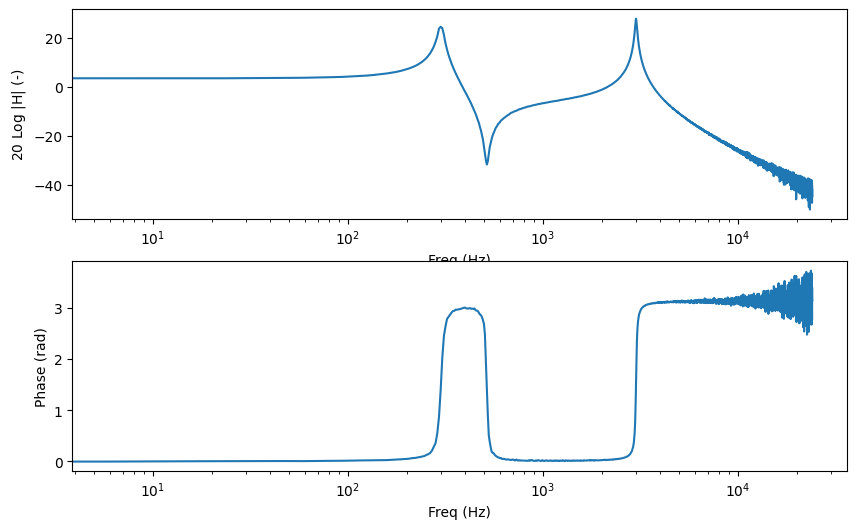
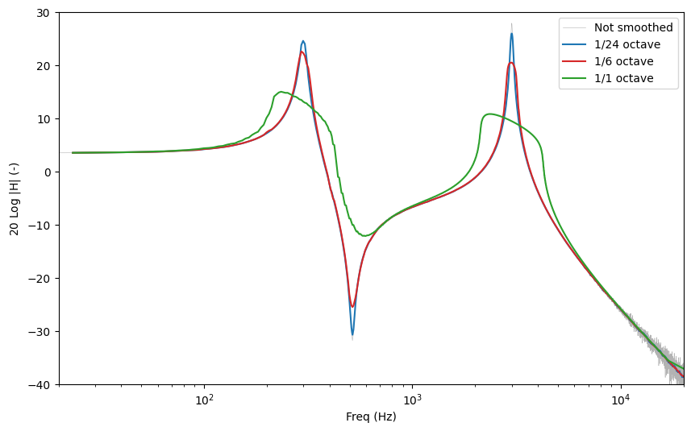
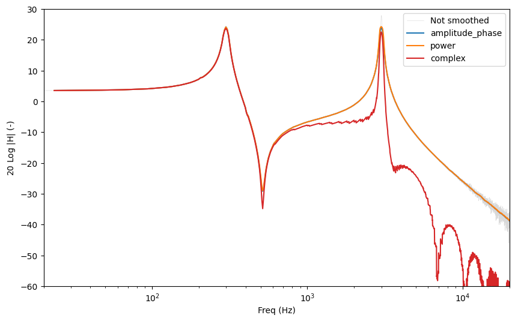
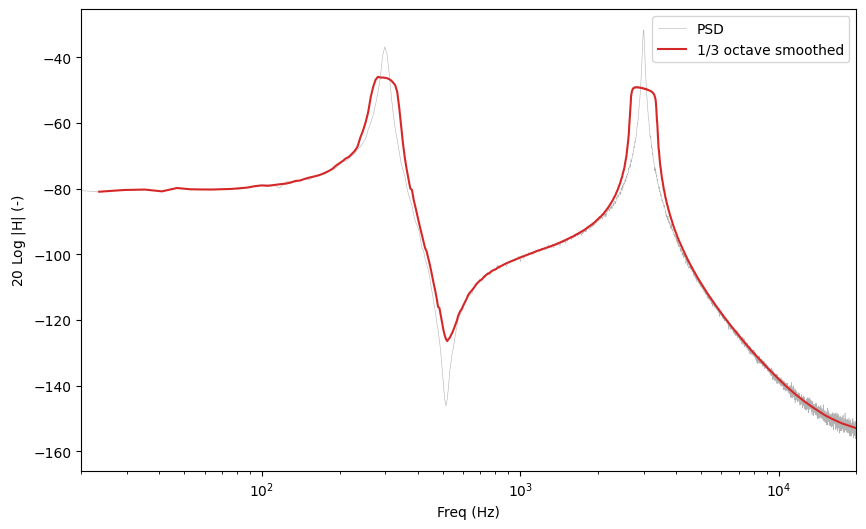
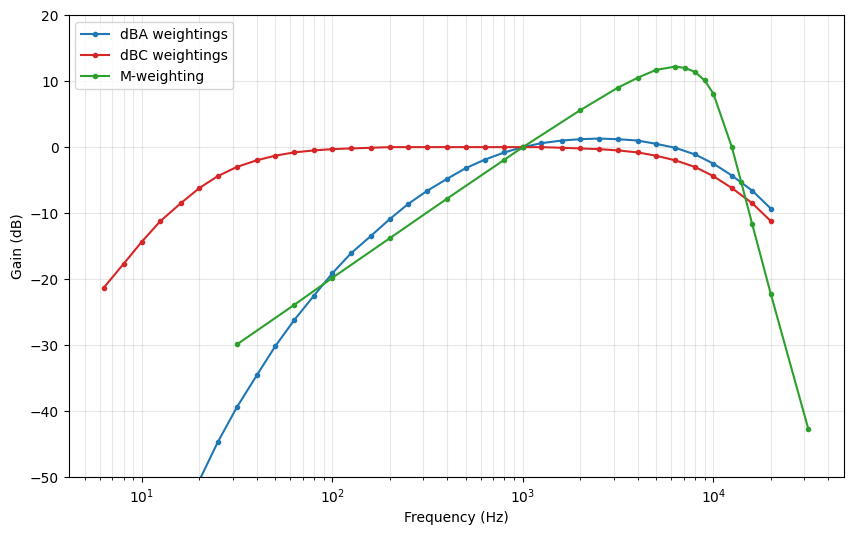
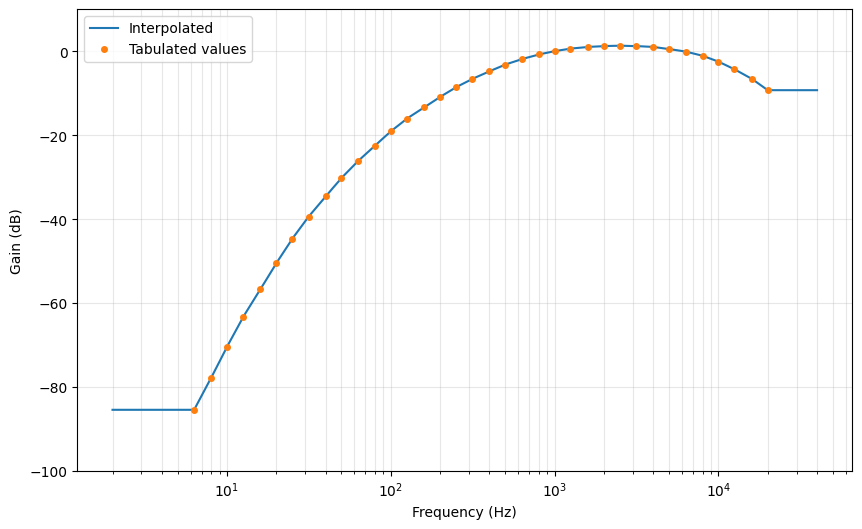
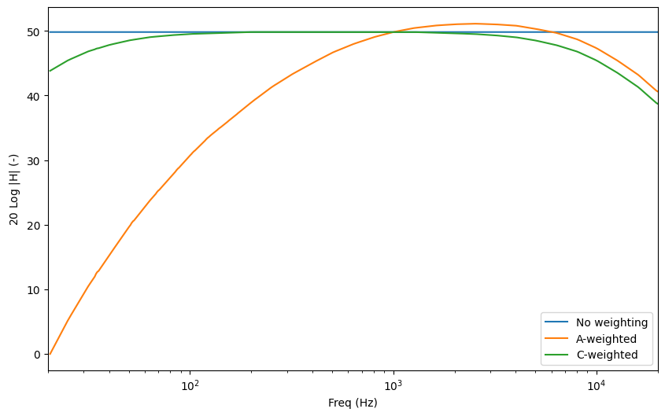
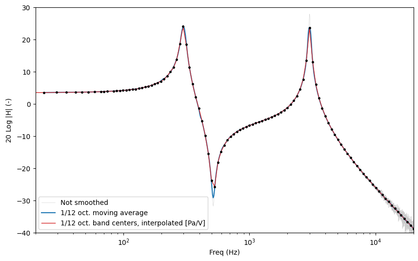

Tutorial 4: Spectrum smoothing and weighting
Measured spectra are noisy. Transfer functions estimated from a single sweep or from a noise excitation show a lot of details that are not relevant, especially at high frequencies where the frequency resolution of the FFT is much finer than what the ear, or the physics of the problem, actually distinguishes.
This tutorial presents the two related tools that measpy provides:
smoothing, which averages a spectrum over frequency bands whose width is proportional to the frequency (1/nth octave bands),
weighting (
measpy.Weightingobjects), which describes a gain and a phase as a function of frequency, given on a small number of frequencies. Weightings are used for dBA/dBC curves, for microphone response corrections, and as a compact representation of a smoothed spectrum.
#This is here in case we want to use the local measpy directory
import sys
sys.path.insert(0, "..")
import measpy as mp
import numpy as np
import matplotlib.pyplot as plt
plt.rcParams['figure.figsize'] = (10, 6)
1. A noisy transfer function
To have something to smooth, let us build a synthetic system with two resonances, measure it with a white noise, and estimate its transfer function with Welch’s method. The result is the kind of noisy spectrum that a real measurement produces.
FS = 48000
DUR = 5.0
np.random.seed(0)
# The excitation signal. It covers the whole frequency range of the card,
# so that the transfer function is defined everywhere
s_out = mp.Signal.noise(fs=FS, dur=DUR, freqs_range=(5, FS/2), unit='V')
# A system with two resonances, applied in the frequency domain
sp_out = s_out.rfft()
f = sp_out.freqs
H = 1/(1-(f/300)**2-0.05j*(f/300)) + 0.5/(1-(f/3000)**2-0.02j*(f/3000))
# The response, with some measurement noise added
s_in = sp_out.similar(values=sp_out.values*H).irfft().similar(
unit='Pa', desc='Measured pressure')
s_in = s_in + mp.Signal(fs=FS,
unit='Pa',
values=0.02*np.random.randn(s_in.length),
desc='Measurement noise')
# The measured transfer function
G = s_in.tfe_welch(s_out, nperseg=2**13)
G.desc = 'Measured transfer function'
G.plot()
array([<Axes: xlabel='Freq (Hz)', ylabel='20 Log $|$H$|$ (-)'>,
<Axes: xlabel='Freq (Hz)', ylabel='Phase (rad)'>], dtype=object)

2. 1/nth octave smoothing
The smoothing methods of the Spectral class replace the value at each
frequency $f$ by the mean of all the values contained in the frequency band
$$\left[\frac{f}{2^{1/2n}},\ f,2^{1/2n}\right]$$
that is, a band of width 1/n octave centered on $f$. This is a true moving average: it is computed at every frequency of the spectrum, so the frequency resolution of the result is the same as that of the original spectrum. The averaging bandwidth grows with the frequency, which is why the result looks equally smooth on a logarithmic frequency axis.
Two methods are available:
nth_oct_smoothfor real valued spectra (a PSD for instance),nth_oct_smooth_complexfor complex valued spectra (a transfer function).
The frequency range of the result is given with the standard measpy arguments
freqs_range, freq_min and freq_max. Outside of this range, the
values are set to zero.
a = G.plot(plot_phase=False, lw=0.4, color='0.7', label='Not smoothed')
for n, color in ((24, 'tab:blue'), (6, 'tab:red'), (1, 'tab:green')):
G.nth_oct_smooth_complex(n, freqs_range=(20, 20000)).plot(
ax=a, plot_phase=False, color=color, label=f'1/{n} octave')
a.set_xlim(20, 20000)
a.set_ylim(-40, 30)
a.legend()
/home/doare/src/measpy/examples/../measpy/signal.py:3402: RuntimeWarning: divide by zero encountered in log10
modulus_to_plot = 20*np.log10(np.abs(self.values))
<matplotlib.legend.Legend at 0x787d9a228b00>

The smaller n, the wider the averaging band, and the more the details
disappear. A 1/3 octave smoothing is a common choice in room acoustics, 1/12 or
1/24 octave keeps the shape of the resonances while removing most of the noise.
Note that smoothing lowers the peaks and fills the dips: it is an average, not a
peak detector. If the amplitude of a sharp resonance matters, use a large n
(or no smoothing at all).
3. How the complex values are averaged
Averaging complex numbers can be done in several ways, and the result is not the
same. The mode argument of nth_oct_smooth_complex selects the method:
| mode | What is averaged |
| — | — |
| 'amplitude_phase' (default) | The modulus and the unwrapped phase, separately |
| 'complex' | The complex values themselves |
| 'power' | The squared modulus (energetic average), and the unwrapped phase |
The difference only shows up when the phase rotates quickly inside an averaging band. To make it visible, we add a propagation delay of 5 ms to the measured transfer function, which is what a microphone placed 1.7 m away from a loudspeaker would give.
tau = 5e-3
Gd = G.similar(values=G.values*np.exp(-2j*np.pi*G.freqs*tau),
desc=f'Transfer function with a {1000*tau:.0f}ms delay')
a = Gd.plot(plot_phase=False, lw=0.4, color='0.85', label='Not smoothed')
for mode, color in (('amplitude_phase', 'tab:blue'),
('power', 'tab:orange'),
('complex', 'tab:red')):
Gd.nth_oct_smooth_complex(12, freqs_range=(20, 20000), mode=mode).plot(
ax=a, plot_phase=False, color=color, label=mode)
a.set_xlim(20, 20000)
a.set_ylim(-60, 30)
a.legend()
<matplotlib.legend.Legend at 0x787d9a188440>

Above a few hundred hertz, the 'complex' mode collapses: inside one
1/12 octave band the phase rotates by more than a turn, and the values cancel
each other. The two other modes are unaffected, because they average the
modulus.
This is worth remembering:
'complex'is the only linear mode (the smoothing of a sum is the sum of the smoothings), but it must be used on time aligned data only, that is, after the propagation delay has been removed. The next tutorial shows how measpy does that.'amplitude_phase'(the default) and'power'are insensitive to the delay as far as the modulus is concerned, and are the safe choice for a raw measurement.'power'is the relevant one for quantities that are already energetic, such as power spectral densities.
4. Smoothing a power spectral density
For a real valued spectrum, nth_oct_smooth is used. A moving average
preserves the mean level of the spectrum, which means that the total energy in a
band is unchanged: the smoothed PSD can be read as a level.
P = s_in.psd(nperseg=2**13)
a = P.plot(plot_phase=False, lw=0.4, color='0.7', label='PSD')
P.nth_oct_smooth(3, freqs_range=(20, 20000)).plot(
ax=a, plot_phase=False, color='tab:red', label='1/3 octave smoothed')
a.set_xlim(20, 20000)
a.legend()
inband = (P.freqs > 100) & (P.freqs < 10000)
smoothed = P.nth_oct_smooth(3, freqs_range=(20, 20000))
print('Ratio of the mean levels (should be close to 1): '
f'{smoothed.values[inband].mean()/P.values[inband].mean():.4f}')
Ratio of the mean levels (should be close to 1): 0.9977

5. Weighting objects
A measpy.Weighting object stores a gain as a function of the frequency:
freqs: a 1D array of frequencies,amp: the corresponding amplitudes (linear, not dB),phase: the corresponding phases in radians,desc: a description.
Two properties give other representations of the same data: adb (the
amplitude in dB) and acomplex (the complex value amp*exp(1j*phase)).
measpy provides three standard weightings as module constants: mp.WDBA
(A-weighting), mp.WDBC (C-weighting) and mp.WDBM (M-weighting).
fig, ax = plt.subplots(1)
for w, color in ((mp.WDBA, 'tab:blue'), (mp.WDBC, 'tab:red'), (mp.WDBM, 'tab:green')):
ax.semilogx(w.freqs, w.adb, '.-', color=color, label=w.desc)
ax.set_xlabel('Frequency (Hz)')
ax.set_ylabel('Gain (dB)')
ax.set_ylim(-50, 20)
ax.grid(which='both', alpha=0.3)
ax.legend()
<matplotlib.legend.Legend at 0x787d986c12b0>

Interpolating a weighting
A weighting is defined on a few frequencies only. The
values_at_freqs method interpolates it at any other frequency. The
interpolation is done on a logarithmic frequency scale, and the amplitude is
interpolated in the dB domain. Outside of the tabulated range, the value of the
closest end is used: a weighting is never extrapolated.
freqs = np.logspace(np.log10(2), np.log10(40000), 500)
values = mp.WDBA.values_at_freqs(freqs)
fig, ax = plt.subplots(1)
ax.semilogx(freqs, 20*np.log10(np.abs(values)), label='Interpolated')
ax.semilogx(mp.WDBA.freqs, mp.WDBA.adb, 'o', ms=4, label='Tabulated values')
ax.set_xlabel('Frequency (Hz)')
ax.set_ylabel('Gain (dB)')
ax.set_ylim(-100, 10)
ax.grid(which='both', alpha=0.3)
ax.legend()
print(f'A-weighting at 1kHz : {20*np.log10(abs(mp.WDBA.values_at_freqs(1000.))):.3f} dB')
A-weighting at 1kHz : 0.000 dB

Applying a weighting to a spectrum
apply_weighting multiplies a spectrum by an interpolated weighting.
With inverse=True, it divides by it instead, which is how the response of
a reference sensor is removed from a measurement.
apply_dBA and apply_dBC are shortcuts for the standard curves.
s_pa = mp.Signal.noise(fs=FS, dur=2.0, freqs_range=(5, FS/2), unit='Pa')
sp = s_pa.rfft()
a = sp.nth_oct_smooth_complex(12, freqs_range=(20, 20000)).plot(
plot_phase=False, label='No weighting')
sp.apply_dBA().nth_oct_smooth_complex(12, freqs_range=(20, 20000)).plot(
ax=a, plot_phase=False, label='A-weighted')
sp.apply_dBC().nth_oct_smooth_complex(12, freqs_range=(20, 20000)).plot(
ax=a, plot_phase=False, label='C-weighted')
a.set_xlim(20, 20000)
a.legend()
<matplotlib.legend.Legend at 0x787d9a14e7b0>

6. From a spectrum to a weighting, and back
A smoothed spectrum can be reduced to a small number of points, one per 1/nth
octave band. This is what the nth_oct_smooth_to_weight (real) and
nth_oct_smooth_to_weight_complex (complex) methods do: they return a
Weighting object whose frequencies are the center frequencies of the
bands. Bands that contain no data (at low frequency, where the bands are
narrower than the frequency resolution) are dropped.
This is the compact form used to store a calibration curve in a file. The
to_csv and from_csv methods of the Weighting class write and
read a three column file (frequency, amplitude, phase), with options to choose
between dB or linear amplitudes, and radians or degrees.
W = G.nth_oct_smooth_to_weight_complex(12, freqs_range=(20, 20000))
print(f'{len(W.freqs)} points instead of {G.length}')
W.to_csv('my_weighting.csv', asdB=True, asradians=True)
W2 = mp.signal.Weighting.from_csv('my_weighting.csv', asdB=True, asradians=True)
print(f'Max difference after a save/load round trip: {np.max(np.abs(W.amp-W2.amp)):.2e}')
106 points instead of 4097
Max difference after a save/load round trip: 3.55e-15
A Weighting can be turned back into a full Spectral object by
giving it to the similar method with the w keyword. The values are
interpolated at every frequency of the spectrum.
The figure below compares the moving average (computed at every frequency) with
the band center values and their interpolation. The two are close, but the
moving average keeps more detail: it is what should be used for analysis, while
the Weighting is a compact form suited to storage and to the correction of
a sensor response.
a = G.plot(plot_phase=False, lw=0.4, color='0.8', label='Not smoothed')
G.nth_oct_smooth_complex(12, freqs_range=(20, 20000)).plot(
ax=a, plot_phase=False, color='tab:blue', label='1/12 oct. moving average')
G.similar(w=W, desc='1/12 oct. band centers, interpolated').plot(
ax=a, plot_phase=False, color='tab:red', lw=1)
a.semilogx(W.freqs, W.adb, 'k.', ms=5)
a.set_xlim(20, 20000)
a.set_ylim(-40, 30)
a.legend()
<matplotlib.legend.Legend at 0x787d9a13a1e0>

7. A practical use: microphone response calibration
The measpy.utils.mic_calibration_freq function measures the frequency
response of a microphone by comparing it with a reference microphone, both
recording the same sound field. It returns a Weighting object.
If the response of the reference microphone is itself known (as a
Weighting), it is passed with the Wref argument and it is removed
from the result.
import measpy as mp
from measpy.audio import audio_run_measurement
FS, DUR = 48000, 10
pa = mp.Signal(fs=FS, unit='Pa', cal=..., dbfs=...)
paref = mp.Signal(fs=FS, unit='Pa', cal=..., dbfs=...)
M = mp.Measurement(device_type='audio', fs=FS,
in_sig=[pa, paref], in_map=[1, 2], dur=DUR,
in_device='default')
audio_run_measurement(M)
# The frequency response of the microphone, as a 1/3 octave Weighting
micresp = mp.mic_calibration_freq(M.in_sig[0], M.in_sig[1], noct=3)
micresp.to_csv('my_microphone.csv')
The resulting curve is then applied to any later measurement made with this microphone:
w = mp.signal.Weighting.from_csv('my_microphone.csv')
corrected = measured_signal.rfft().apply_weighting(w, inverse=True).irfft()
8. Summary
| Method | Applies to | Returns |
| — | — | — |
| nth_oct_smooth(n, ...) | Real spectrum | A Spectral, same frequency grid |
| nth_oct_smooth_complex(n, ..., mode=...) | Complex spectrum | A Spectral, same frequency grid |
| nth_oct_smooth_to_weight(n, ...) | Real spectrum | A Weighting, one point per band |
| nth_oct_smooth_to_weight_complex(n, ...) | Complex spectrum | A Weighting, one point per band |
| similar(w=W) | Spectral | A Spectral interpolated from a Weighting |
| apply_weighting(W, inverse=False) | Spectral | A weighted Spectral |
| values_at_freqs(f) | Weighting | Complex values at the given frequencies |
All these methods accept the standard measpy frequency range arguments
freqs_range, freq_min and freq_max. The older fmin and
fmax arguments still work but print a deprecation message.